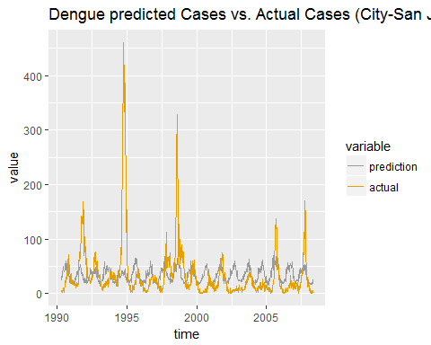
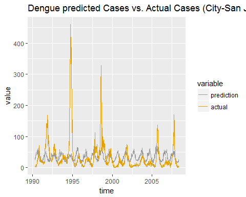

DengAI:
Predicting Disease Spread
Problem Statement: Using environmental data collected by various U.S. Federal Government agencies our task in this competition is to predict the number of dengue fever cases reported each week in San Juan, Puerto Rico and Iquitos, Peru , based on environmental variables describing changes in temperature, precipitation, vegetation, and etc.
Technical Stuff: I used R for Exploratory Data Analysis, Modelling and Time Series Analysis. The data had lots of NA values which were imputed using 'imputeTS' package. I used NGBM model in CARET package for modelling. The output was then smoothed using Moving Average.
Result: My algorithm was able to predict number of dengue fever with 75% accuracy.
Check my solution at GitHub.
 
